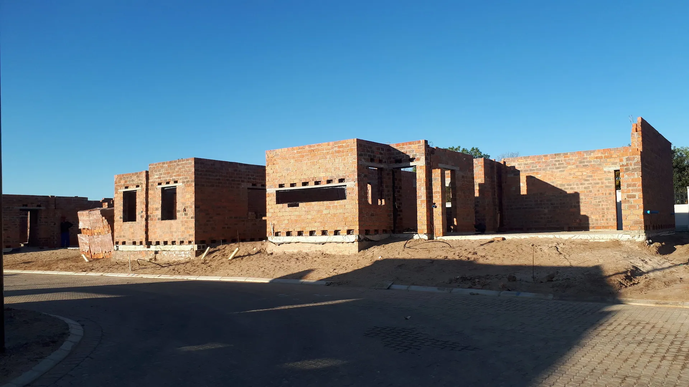
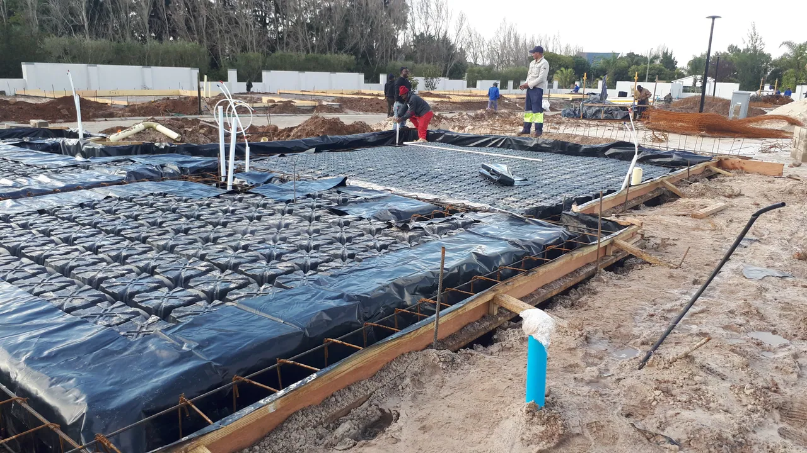
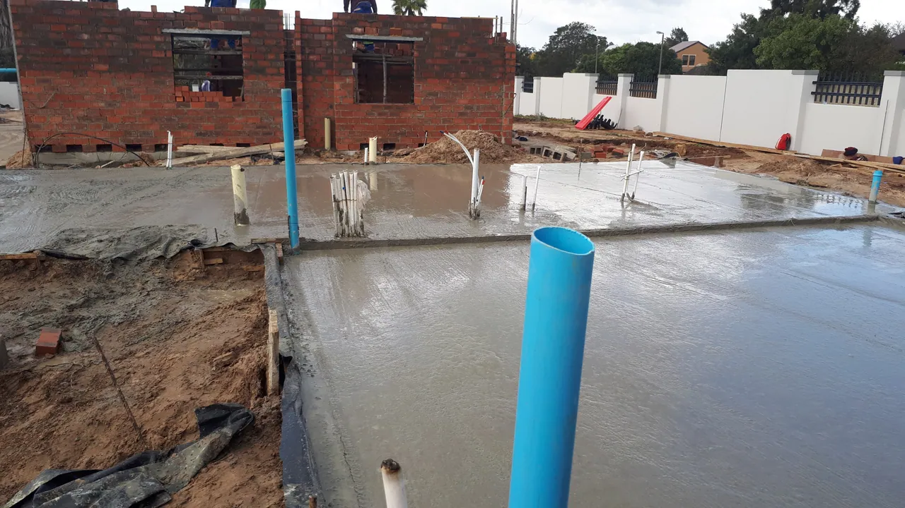
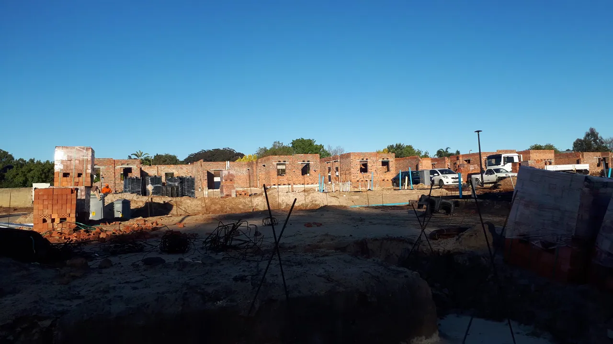
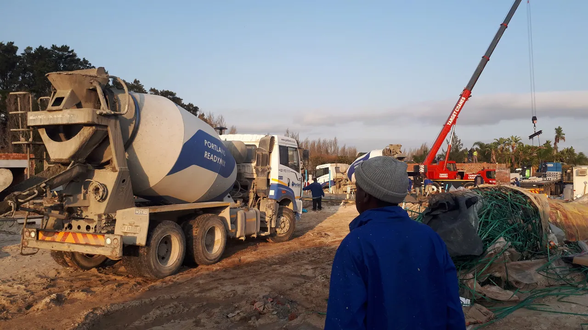
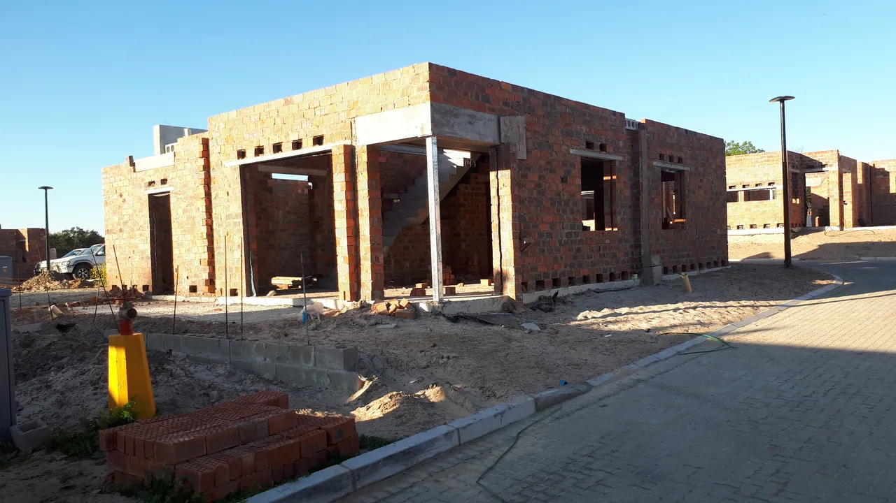
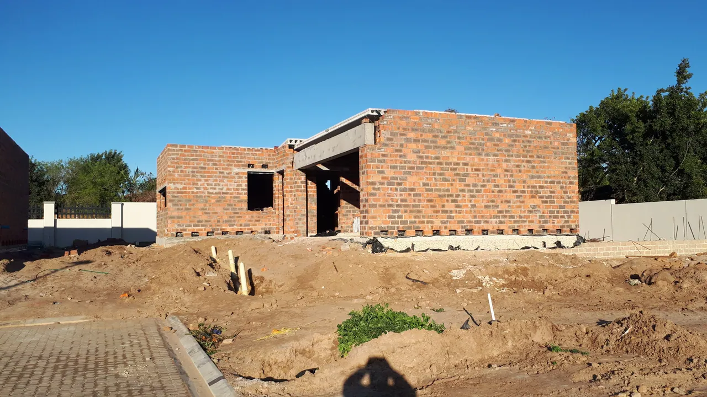

Projects / 2022 photo record
Structure and masonry.
Dated photographs of site preparation and construction. These images are an archive record, not a single named project.
← All projects
Groundwork / July 2022 Site work / July 2022 Building work / August 2022 Concrete operation / August 2022 Masonry / August 2022 Masonry / August 2022 
Site overview / August 2022
2022 archive
Work in progress.
Photo dates are taken from the supplied archive filenames. Project names, locations, scopes and completion status have not been confirmed.






Planning something similar?
Tell us your location, stage and the type of work you need.
Discuss your project ↗